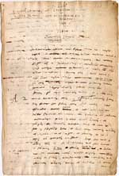
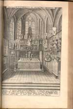
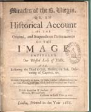
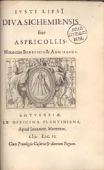
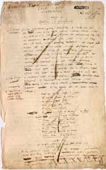

Justus Lipsius 1606 – 2006
Samenstelling: Jeanine de Landtsheer en A.Th. Bouwman
De webpresentatie behandelt de volgende onderwerpen:
10. Leuven
Nadat Lipsius zich in Mainz met de katholieke kerk had verzoend en zich vervolgens in het prinsbisdom Luik had gevestigd, werden zijn contacten met katholieke geleerden in Europa weer intensiever. Buitenlandse aanbiedingen sloeg hij echter af, in de hoop een aanstelling aan de universiteit van Leuven te ontvangen. Het duurde echter een jaar voordat de Staten van Brabant gevolg gaven aan de petities van een aantal vrienden van Lipsius en hem een hoogleraar-schap te Leuven aanboden. Het salaris was aanmerkelijk lager dan in Leiden en de uitbetaling verliep stroef, tot Filips II hem in december 1595 aanstelde tot Koninklijk Geschiedschrijver, wat een aanzienlijke jaarvergoeding opleverde. Lipsius gaf niet alleen onderwijs op de hem vertrouwde gebieden, Latijn en oude geschiedenis, maar stelde zijn kennis ook ten dienste van het katholieke geloof. Behalve een geschiedenis van Leuven schreef hij over drie Maria-heiligdommen in Brabant: de oude pelgrimsplaats Halle, de nieuwe pelgrimsplaats Scherpenheuvel en de Sedes Sapientiae (Zetel van Wijsheid) in de Sint-Pieterskerk te Leuven.
|
10.1 || ‘Lipsii Urbis Lovaniae descriptio’. Manuscript. [Lips.
13]. –– Eerste bladzijde van Lovanium sive opidi et academiae eius descriptio, door Johannes Moretus in 1605 te Antwerpen gedrukt, met in de marge een katernaanduiding van de zetter. Lipsius schreef het traktaatje als trouwcadeau voor Karel, hertog van Croÿ en Aarschot (1550-1612), een van zijn mecenassen te Leuven. |
|  |
10.2 || J. Lipsius, Diva Virgo Hallensis.Beneficia eius & miracula fide atque ordine descripta. Antwerpen: J. Moretus, 1605. [575 B 5: 5]. –– Het Mariabeeld in de Sint-Martinuskerk te Halle bij Brussel werd sinds het eind van de dertiende eeuw vereerd. In zijn Diva Virgo Hallensis verklaart Lipsius hoe het beeld in Halle terecht kwam en beschrijft hij de mirakelen die opgetekend waren. De gravure toont de kapel met beeld. |
|  |
|
10.3 || J. Lipsius, Miracles of the B. Virgin, or An historical account of the original, and stupendous performances of the image entituled, Our Blessed Lady of Halle. Londen: [z.n.], 1688. [190 D 4]. –– Het werk vond in katholieke kringen veel bijval, maar werd door protestanten (die heiligenverering en geloof in mirakelen afwijzen) bespot en gehekeld. Beide reacties leidden tot herdrukken en vertalingen. Deze late Engelse vertaling hoort tot het tweede kamp. |
|  |
10.4 || J. Lipsius, Diva Sichemiensis sive Aspricollis.Antwerpen: J. Moretus, 1606. [178 B 43: 5]. –– Vergelijkbare waardering en verguizing vielen Lipsius’ traktaat over het Mariaheiligdom van Scherpenheuvel (Zichem) ten deel, dat door de aartshertogen in tien jaar tijd werd uitgebouwd tot een contrareformatorisch bolwerk. Ook hier worden ontstaansgeschiedenis en wonderen beschreven in een afwisseling van proza en poëzie. |
|  |
|
10.5 || ‘I. Lipsii Diva Virgo Lovaniensis’. Manuscript. [Lips. 12]. –– Het manuscript van een derde Mariatraktaat, gewijd aan de Sedes Sapientiae (Zetel van Wijsheid) in de Leuvense Sint-Pieterskerk bleef bij Lipsius’ plotselinge dood ongepubliceerd en raakte vergeten in zijn papieren. De tekst van deze Diva Lovaniensis wordt in 2006, vierhonderd jaar na dato alsnog gepubliceerd. |
|  |
| vorige pagina | volgende pagina |